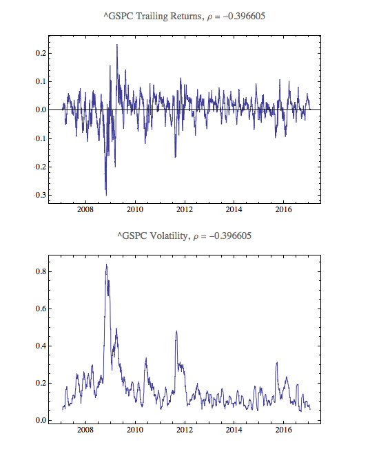
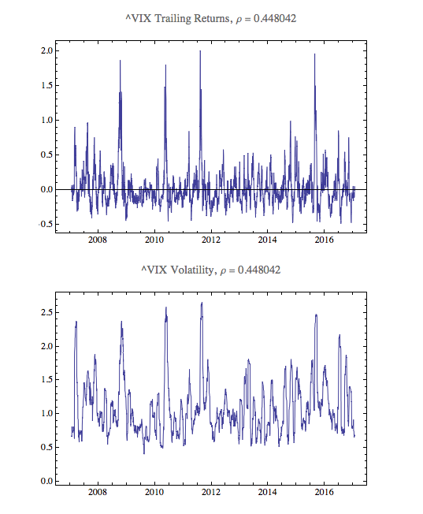
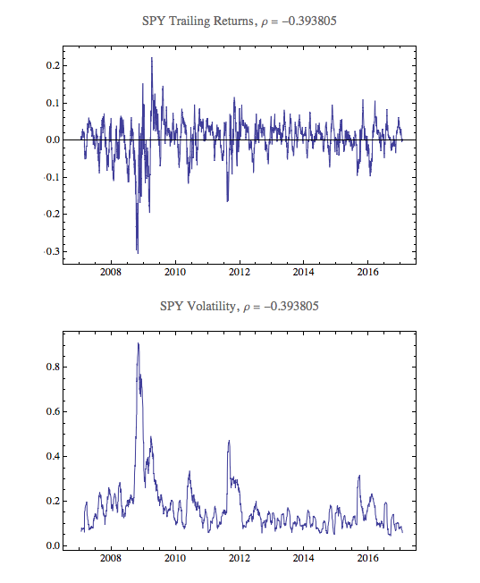
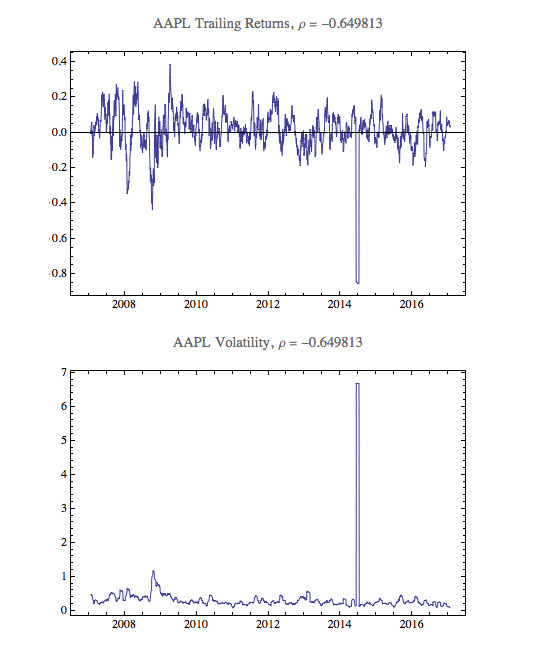
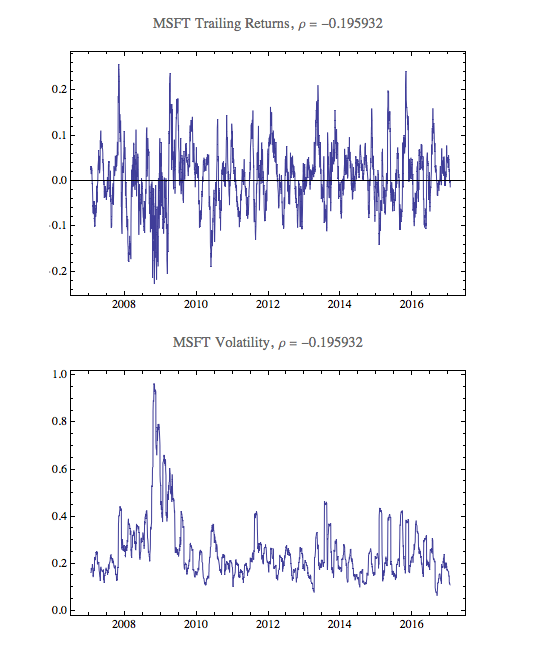
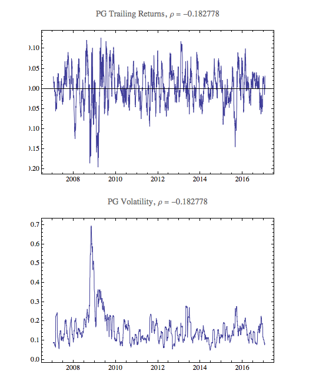
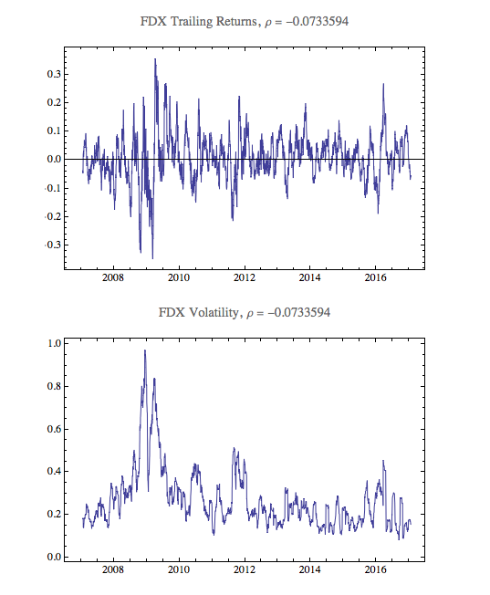
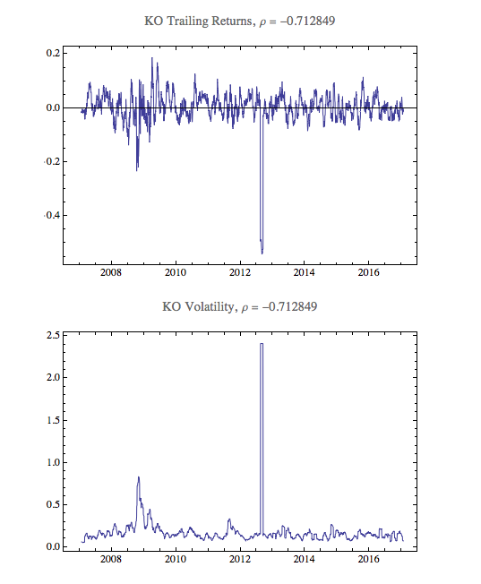
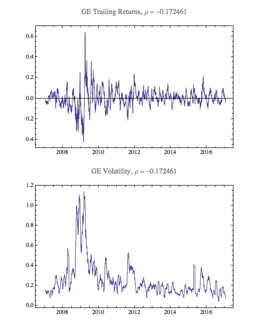
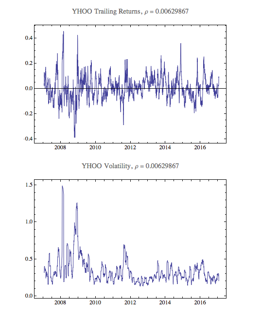

Mikhail Gaerlan 10 March 2017
The sign of the computed correlation coefficients correspond to changes in the volatility and returns. For example, most of the stocks with a negative correlation coefficient have negative returns with high volatility.
 
 
 
 
 